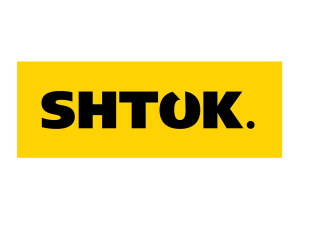

Материал компании

MITEX 2026 · Россия · Стенд 8В301
SHTOK.
Карточка проверена 10 ноября 2026, 09:28 · Источник ↗ · Снимок оригинальной карточки ↗
О компании
SHTOK. ─ профессиональный электромонтажный инструмент. SHTOK. создан на основе идеи сделать качественный профессиональный электромонтажный инструмент доступным для российского потребителя. Мы стремимся, чтобы инструмент SHTOK. всегда своевременно был под рукой. Это инструмент, который просто купить и просто использовать. Инструмент SHTOK. стабильно надежен, им можно работать долго, независимо от масштабов задач.
Контакты
Все контактные сведения из карточки
Контакты Офис Телефон: +7 (916) 694-61-11 E-mail: info@shtok.ru Адрес: 127521, Россия, Москва, Шереметьевская ул., дом 47 Веб-сайт: https://shtok.ru E-mail: info@shtok.ru Телефон: +7 (916) 694-61-11
Все рубрики участника
Mitex - Рубрикатор
- 1. Электроинструмент и расходные материалы
- 5. Слесарный, монтажный, столярный, ручной инструмент
- 6. Инструменты и оборудование для обработки и резки металла, проволоки, труб, камня, стекла, керамики, пластмасс, дерева
Зал
- Зал № 8
Участник выставки
- MITEX